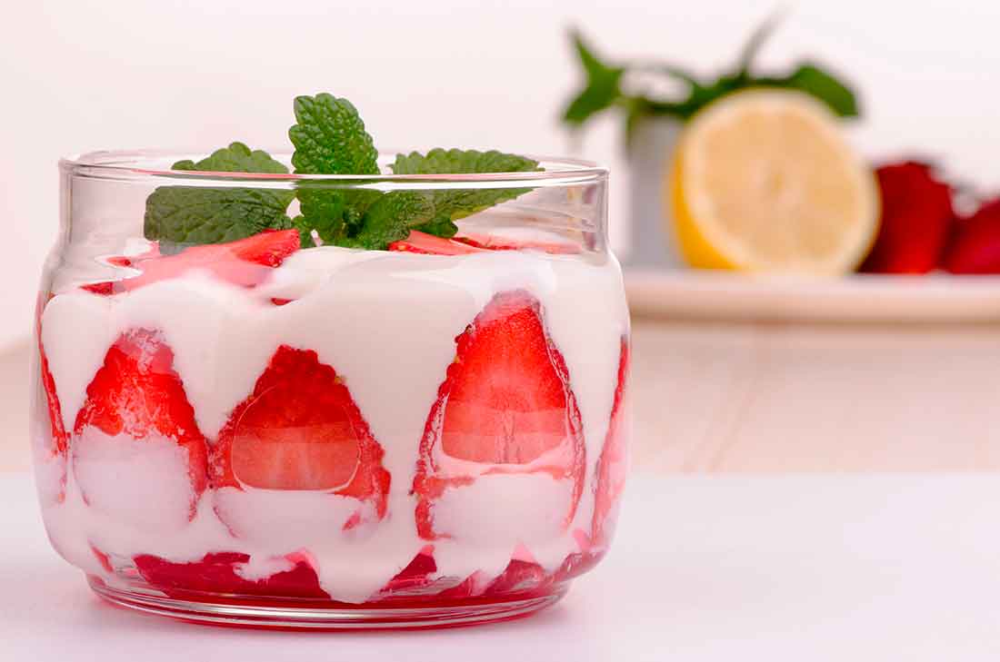

Fresas con Crema

Ingredient List
- Fresh Strawberries: 1 lb
- Sour Cream: 2 cups
- Sweetened Condensed Milk: 1 cup
- Evaporated Milk: ½ cup
- Vanilla Extract: ½ teaspoon
Steps
- Remove and discard the stems from the strawberries. Slice the fruit into thin slices and transfer to a medium bowl.
- In a large mixing bowl, add sour cream, sweetened condensed milk, evaporated milk and vanilla extract. Whisk together to combine.
- Scoop ½ cup sliced strawberries into 6 bowls or cups. Then top each cup with ½ cup sweet cream mixture.
- Serve immediately with a spoon or store in the fridge for up to 5 days.